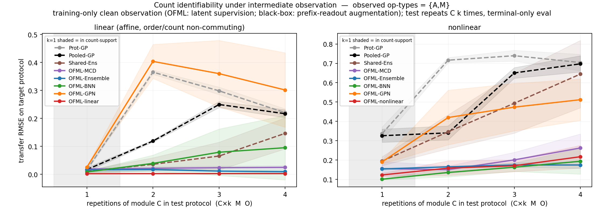
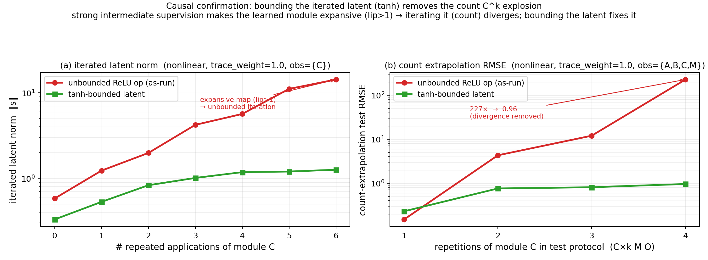

主張 1 · 中間観測は識別可能性の限界を修復する
主張 1 を支える。中間観測 \(S=\{A,M\}\)（学習時のみ・端末直後の真の潜在状態を観測）は、端末観測のみ（\(S=\varnothing\)）では欠けている識別信号を供給し、反復 count \(C^k\) の転移を安定化する。合成的モデルはこの信号を消費してcount 記述子の下限より下へ誤差を押し下げるが、ブラックボックス（Pooled-GP・Prot-GP）は同じ観測を prefix-readout 拡張で受け取っても不活性で横ばいのままである（付随させる潜在モジュールが無いため）。さらに観測下で唯一伴う失敗モード（反復演算子 \(C^k\) の発散）の原因を機構的に特定し — 観測器のゲージ自由度 → Lipschitz \(>1\) — count 安定性＋order 識別を組み合わせた目的で選んだアーキテクチャによって除去する。指標はすべてマクロ NRMSE（各 target の自スケールで正規化）。

AM 下での count 識別。容量一致 OFML-nonlinear (\(d=2\)) の count-\(k=4\) 転移。count のみの正則化レジーム（traceablation1）は反復とともに発散し、count+order 統合レジーム（traceablation2）は \(k\) にわたり横ばい。クリックで拡大。Shared-Ens（順序盲 count 記述子）は床付近で小さく改善。主張 1「中間観測は識別可能性の限界を修復する — 使えるのは合成的モデルのみ」を、最も反復に敏感な count テストベッド（target が同一操作 \(C\) を \(k\) 回反復）で検証する。二段構えで示す：(i) 識別の修復 — 中間観測 \(S=\{A,M\}\) は端末観測のみでは欠けている真の識別信号を供給し、合成的代理モデルの count-\(k=4\) 誤差を count 記述子の下限より下へ押し下げる。この信号を消費できるのは合成的モデルのみで、ブラックボックス（Pooled-GP・Prot-GP）は同じ観測を prefix-readout 拡張で与えても横ばい（\(\Delta=0\)）。(ii) 反復失敗の制御 — 観測下で唯一伴う失敗モード（強い教師信号で鋭くされた演算子を反復した際の count \(C^k\) 発散）を機構的に特定（ゲージ自由度 → Lipschitz \(>1\)）し、目的関数駆動のアーキテクチャ選択で完全に除去する。すなわち発散は観測に内在するコストではなく、アーキテクチャ/正則化のアーティファクトである。
図 5 の count テストベッドを再利用する。source は 16 プロトコル（各操作型を高々 1 回・終端 M O）、target は操作 \(C\) を \(k\) 回反復する C×k M O（\(k=1,\dots,4\)）。観測部分集合 \(S\subseteq\{A,B,C,M\}\)（全 \(2^4=16\) 通り）を学習時のみ観測し、評価は端末のみ（target 終端 readout の NRMSE）で行う。本ページの主要比較は代表サブセット \(S=\{A,M\}\)、主指標は最も反復に敏感な count-\(k=4\)。16 サブセット × 3 seed を統計単位とする。8 つの代理モデル（合成 6・記述子 1・ブラックボックス 2）を同一の source 行・同一の観測情報で比較し、構造だけを切り分ける。発散の対照実験には容量一致の OFML-nonlinear（\(d=2\)、より深く n_hidden=2、より遅い lr=0.002）を用い、trace_weight スイープでの Lipschitz 定数 \(\operatorname{lip}(C)\)、線形合成／端末のみ／tanh 有界化／align-free 直接教師の各条件を並べる。
※ 主要な設計原則：観測は並列・非破壊の側枝（op ↓ O_op → y_op）として潜在に追加の勾配制約のみを与え、順伝播グラフと合成を変えない（試料を変えない非破壊測定の類似）。ブラックボックスには対応する潜在モジュールが無いので、同じ情報をprefix-readout 拡張（接頭辞プロトコルの端末スカラー readout）で与える — それでも消費できないことが主張 1 の要諦である。指標は生 RMSE ではなく各 target の自スケールで正規化したマクロ NRMSEを用いる（count テストベッドは readout を自スケール標準化しているため、後掲のトレースアブレーション表の生 RMSE は ≈NRMSE）。
| モデル | 構造 | 中間観測の消費 | count-\(k=4\) の挙動 |
|---|---|---|---|
OFML-linear | 線形合成（設計上識別可能・操作型ごとに \(2\times2\) 行列を共有） | 観測器 O_op で消費可 | 全域で免疫（\(\approx 0.00\)） |
OFML-Ensemble | 合成ネット・種のみ 5-member 深層アンサンブル | 観測器で消費 | 発散せず・観測で改善 |
OFML-MCD | 合成ネット・MC dropout 不確実性 | 観測器で消費 | 発散せず・観測で改善 |
OFML-BNN | 合成ネット・変分ベイズ（重み分布） | 観測器で消費 | 端末のみ弱い → 観測で大幅改善 |
OFML-GPN | 合成ネット・GP 潜在（GP-net） | 観測器で消費 | 端末のみ最弱 → 観測で改善（残差大） |
Shared-Ens | 操作 count 記述子ベース・順序盲共有アンサンブル | 部分的にのみ反映 | 記述子床付近 → 小改善 |
Pooled-GP | ブラックボックス・count/接頭辞入力のプールド GP | prefix-readout のみ・不活性 | 横ばい（\(\Delta=0\)） |
Prot-GP | ブラックボックス・プロトコル核 GP | prefix-readout のみ・不活性 | 横ばい（\(\Delta=0\)） |
指標はすべてマクロ NRMSE。各 target \(p\) の予測 \(\mu_p\) と真値 \(f_p\) を、その target 自身のスケール \(s_p\) で正規化する：\[ \NRMSE_p=\sqrt{\operatorname{mean}_x(\mu_p-f_p)^2 \,/\, s_p^2},\qquad s_p=\sqrt{\operatorname{mean}_x(f_p-\bar f_p)^2}, \] マクロ NRMSE は target 集合上の等重み平均。反復感度は \(k\) を横断した \(\NRMSE\) の増大で測り、深さ効果は演算子ゲイン \(\operatorname{lip}(C)\) の反復積 \(\prod_{i=1}^{k}\operatorname{lip}(C)\) と結びつける（Lipschitz \(>1\) の反復が潜在を増幅し、学習領域外で ReLU 線形外挿 → 発散）。中間観測は各 \(k\) での終端誤差を計り直すのではなく、潜在に真の post-op 状態を固定する追加制約としてゲインの暴走を抑える。
中間観測は、被観測操作型 op ∈ S（S ⊆ {A,B,C,M}）の位置に観測器モジュール O_op を置き、その出力を学習時のみ観測して実現する。O_op が観測するのはその操作を適用した直後の真の 2 次元状態 state*_op = F_op†(z†)（post-op・ノイズなし）— すなわち O_A は「A 適用直後の \((s_0,s_1)\)」、O_M は「M 適用直後の状態」を観測する。端末観測器 O は既に端末で観測済みなので S には含めない。
OFML 側（合成モデル）：各被観測操作型に操作型ごとに別々の学習可能な観測器 O_op : ℝᵈ→ℝ²（バイアスなし線形）を付け、補助損失 Σ_{op∈S} ‖O_op(s_op) − state*_op‖² を端末損失に加える。共有 1 枚の整列にしないのは、そのゲージ自由度（縮小的/拡大的実現の非識別）を除去して count \(C^k\) 発散を抑えるためである。O_op(s) は潜在を 2 次元へ写す並列の読み出しヘッドにすぎず、補助損失を与えるだけで s を書き換えない（O_A は B に接続されず、観測を入れても順伝播と合成は不変）。
ブラックボックス側は観測器を持たない：付随させる潜在モジュールがないため、prefix-readout 拡張で同じ情報を与える — 各被観測位置 t について接頭辞プロトコル op₁ … op_t O の端末 readout をスカラー y = readout(state*_after_t) として観測する訓練行を追加する。よって O_A, O_B, O_C, O_M は OFML 専用であり、ブラックボックスは接頭辞のスカラー読み出しのみを受け取る（それでも消費できず横ばい）。
Fig 5 の count テストベッドを再利用（source 16・target C×k M O）。観測部分集合 S ⊆ {A,B,C,M}（全 16）を学習時のみ観測（評価は端末のみ）。示す図は観測サブセット AM の例。
| 要素 | 値 | 性質 |
|---|---|---|
| source | 16 プロトコル（各操作 ≤1・終端 M O） | 端末読み出しで学習 |
| target | C×k M O（\(k=1..4\)） | 評価は端末のみ（NRMSE） |
| 中間観測 \(S\) | \(\subseteq\{A,B,C,M\}\)（全 16） | 学習時のみ・post-op 真値 2D・ノイズなし |
| seed | 3（サブセットごと） | 主統計単位（16×3） |
| 発散対照 | OFML-nonlinear \(d=2\), n_hidden=2, lr=0.002 | 容量一致（余裕潜在なし） |
OFML-nonlinear が容量一致）：FA=(2σ(2.4s₀−0.8s₁+0.1)−0.8, s₁)、FB=(s₀, 2σ(2.0s₁+0.7s₀−0.2)−0.8)、FC=(1.2·ss(2.2s₀+0.8s₁−1.0), 1.2·ss(2.0s₁−0.6s₀−0.6))（縮小的, Lipschitz<1）、FM=(s₀+0.4tanh(s₀−s₁), s₁+0.4tanh(s₀+s₁))、readout y=1.4·ss(2s₀−1.6s₁+1.2s₀s₁−0.1)+0.25·sin(2π(s₀−s₁))（高周波 sin 項が既約な難易度下限）。真の \(C\) は縮小的（\(\operatorname{lip}<1\)）である点が要点：発散はデータではなく教師信号が \(C\) のゲインを 1 超へ押し上げることに由来する。モジュール型にカーソルを合わせると、共有される同一操作が全プロトコルで強調される（＝重み共有）。
中間観測は合成モデルの誤差を押し下げ、ブラックボックスは横ばい。 \(S=\{A,M\}\) を観測すると 6 つの合成 OFML はすべて count-\(k=4\) NRMSE を下げる（例：OFML-BNN 0.28→0.10、OFML-GPN 0.46→0.30、OFML-Ensemble 0.05→0.01）。設計上識別可能な OFML-linear は元より免疫（0.01→0.00）。順序盲の Shared-Ens は記述子床付近で小さく改善（0.24→0.15）。対してブラックボックスは不活性：Pooled-GP 0.22→0.22、Prot-GP 0.22→0.22（\(\Delta=0\)）— 同じ観測情報を prefix-readout で受け取っても消費できない。
| モデル | \(\varnothing\)（端末のみ） | \(S=\{A,M\}\) | \(\Delta\) |
|---|---|---|---|
| OFML-linear | 0.01 | 0.00 | 0.01 |
| OFML-Ensemble | 0.05 | 0.01 | 0.04 |
| OFML-MCD | 0.04 | 0.02 | 0.02 |
| OFML-BNN | 0.28 | 0.10 | 0.18 |
| OFML-GPN | 0.46 | 0.30 | 0.16 |
| Shared-Ens（順序盲 count） | 0.24 | 0.15 | 0.09 |
| Pooled-GP（ブラックボックス） | 0.22 | 0.22 | 0.00 |
| Prot-GP（ブラックボックス） | 0.22 | 0.22 | 0.00 |
反復失敗（count \(C^k\) 発散）は統合レジームで除去できる。 容量一致 OFML-nonlinear (\(d=2\)) で観測下の唯一の失敗モードを検証する。count のみの正則化レジーム（traceablation1, reg-BO）は全サブセットで発散する一方、count+order 統合レジーム（traceablation2, combined-BO）は横ばいを保つ。16 サブセット中の最悪 \(k=4\) は 14.59 → 1.25、発散数（誤差>2）は 5/16 → 0/16 に減少する。
| 観測サブセット | reg-BO (traceablation1) | combined-BO (traceablation2) |
|---|---|---|
| AM | 14.59（発散） | 0.22 |
| CM | 14.21（発散） | 0.58 |
| ACM | 14.22（発散） | 0.92 |
| BC | 2.94（発散） | 0.51 |
| BCM | 2.04（発散） | 0.53 |
| 16 サブセット中の最悪値 | 14.59 | 1.25 |
| 発散数（誤差>2） | 5/16 | 0/16 |

失敗モードの機構（§8.4）。 真の \(C\) は縮小的（\(\operatorname{lip}<1\)）だが、強いトレース教師信号は学習領域上で \(C\) を真の出力へ点ごとに固定し、ReLU MLP はその写像を 1 を超える Lipschitz ゲインで適合できる。実測でも \(\operatorname{lip}(C)\) は trace_weight を 0→1 とするにつれ 0.8→2.1 へ単調に上昇する（データではなく教師信号がゲインを押し上げる）。ゲイン \(>1\) の写像を反復すると潜在が増幅し、学習領域を離れると ReLU が線形外挿して発散する。根本原因は観測器のゲージ（再パラメータ化）自由度である。確認：(1) trace_weight スイープで \(\operatorname{lip}(C)\) が単調に 0.8→2.1、(2) 線形合成は免疫・端末のみも免疫、(3) 潜在を tanh で有界化すると trace_weight=1.0 でも発散除去、(4) align-free 直接教師で Lipschitz 17→1.2。
この結果は主張 1 を二段構えで支える。第一に、中間観測は真の実行可能なシグナルであり、被覆・順序制約ケースを識別可能にして count-\(k=4\) 誤差を count 記述子の下限より下へ押し下げる — そしてこれを消費できるのは合成的な代理モデルのみで、ブラックボックス（Pooled-GP・Prot-GP）は同じ prefix-readout を受け取っても \(\Delta=0\) で横ばいである（付随させる潜在モジュールが無い）。第二に、観測下での唯一の留保（反復演算子の過度な鋭化による count \(C^k\) 発散）は機構的に理解され、目的関数駆動のアーキテクチャ選択によって除去される：count 安定性＋order 識別を組み合わせた目的でトレース学習アーキテクチャを選ぶと、容量一致 \(d=2\) の OFML-nonlinear は、潜在の余裕・有界活性化・明示的 Lipschitz ペナルティのいずれも用いずに全 16 サブセットで発散しない（最悪 \(k=4\) 14.6→1.25、発散 5/16→0/16）。
反論としてまとめれば、この失敗はアーキテクチャ/正則化のアーティファクトであって観測に内在するコストではない。したがって「中間観測がもたらす識別可能性の修復」という主張 1 の核は、留保つきではなく成立する。関連する観測ページは 図 6（\(s0\) 観測アブレーション）・図 7（order 線形）・図 8（order 非線形）、終端側の識別限界は 主張 1、合成の鋭い優位は 図 5（count）、コスト指標での位置づけは 図 2を参照。
※ 限界：表 9 は代表サブセット \(S=\{A,M\}\) の count-\(k=4\) を切り出したもので、16 サブセット×3 seed の平均。ブラックボックスの \(\Delta=0\) は「観測を全く使えない」ではなく「prefix-readout 拡張という等価情報を与えても有意な改善が出ない」の意（設計に潜在合成が無いため）。発散制御表の生 RMSE は count テストベッド上で自スケール標準化されており NRMSE 近似だが、大きな発散値（14.59 等）は数値的に飽和した領域での指標であり順序情報としてのみ読む。\(\operatorname{lip}(C)\) は学習領域上の有限差分推定。
反復 \(C^k\) の発散を観測下で抑えられるのは、深さ（Lipschitz 積）の増大を中間観測が緩和するためである（命題 6：合成深さに沿った誤差増幅は演算子ゲインの積 \(\prod_i\operatorname{lip}\) で上から抑えられ、中間観測は各段の潜在を真の post-op 状態へ固定してゲインの暴走を除く）。中間観測が供給する識別信号自体は、識別可能性の rank 条件（命題 4）の欠落成分を能動的に埋める操作にあたり、target 終端応答一致性の回復（定理 3・命題 5）と対応する。ブラックボックスがこの信号を使えないのは、pushforward される潜在合成構造（補題 6）を持たないためと読める。